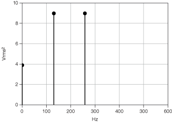

Most frequency analysis instruments display only the positive half of the frequency spectrum because the spectrum of a real-world signal is symmetrical around DC. Thus, the negative frequency information is redundant. The two-sided results from the analysis functions include the positive half of the spectrum followed by the negative half of the spectrum, as shown in the previous front panel.
A two-sided power spectrum displays half the energy at the positive frequency and half the energy at the negative frequency. Therefore, to convert a two-sided spectrum to a single-sided spectrum, you discard the second half of the array and multiply every point except for DC by two, as shown in the following equations.
where SAA(i) is the two-sided power spectrum, GAA(i) is the single-sided power spectrum, and N is the length of the two-sided power spectrum. You discard the remainder of the two-sided power spectrum SAA, N/2 through N - 1.
The non-DC values in the single-sided spectrum have a height given by the following relationship:
The previous equation is equivalent to the following relationship.
where is the root mean square (rms) amplitude of the sinusoidal component at frequency k.
The units of a power spectrum are often quantity squared rms, where quantity is the unit of the time-domain signal. For example, the single-sided power spectrum of a voltage waveform is in volts rms squared, Vrms2.
The following figures show the two-sided spectrum and single-sided spectrum of a time-domain signal, respectively.


The height of the non-DC frequency components in the single-sided spectrum is twice the height of the non-DC frequency component in the two-sided power spectrum. Also, the single-sided spectrum stops at half the frequency of that in the two-sided power spectrum.